There are also two menu entries which are not part of the default build but
which may be configured by modifying configure-fontforge.h before
compiling FontForge.
-
Font Info
-
In all views this brings up the Font Info
dialog.
CID keyed fonts can set information on the CID font as a whole (rather than
just the current sub-font, which is what this command does) from
CID->CID Font Info.
-
Glyph Info
-
In the all views this brings up the Glyph
Info dialog.
-
MATH Info...
-
Brings up the MATH Info dialog.
-
BDF Info
-
If you have bitmaps in your font, then in the font view or bitmap view this
command will bring up the BDF Info dialog.
-
Horizontal Baselines...
-
This dialog gives you control over the OpenType
'BASE' table which allows you to specify different baselines for different
scripts, and how to align those baselines with each other. It also provides
fine control over the inter-baseline spacing (the line height).
-
Vertical Baselines...
-
This dialog gives you control over the OpenType
'BASE' table which allows you to specify different baselines for different
scripts, and how to align those baselines with each other. It also provides
fine control over the inter-baseline spacing (the column width).
-
Get Info
-
In the outline view this brings up one of four different
dialogs (Point Info, Image Info, Reference Info, Anchor Point Info) depending
on what is selected.
-
Show Dependencies
-
References...
-
This dialog is not available in the bitmap view. It shows you what glyphs
contain a reference to the current glyph. You can open a window looking at
any of the dependent glyphs by selecting that glyph and pressing the [Show]
button.
-
Substitutions...
-
Show any glyphs that have substitutions (ligatures, multiple subs, etc.)
which depend on the current glyph. So if you select "i", you might see that
"fi" depended on it as a ligature, and if you select "A.swash" you might
see that "A" depended on it as a 'swsh' alternate subs.
-
Mass Glyph Rename...
-
 This allows
you to rename a bunch of selected glyphs. It can be used in two ways, either:
This allows
you to rename a bunch of selected glyphs. It can be used in two ways, either:
-
You want to rename all the selected glyphs by adding a suffix to their names
(this might be useful if you are working with a small caps Type1 font that
you wanted to convert to an otf font, where the old convention was just to
name the glyphs as "a", "b" and so forth rather than "a.sc", "b.sc", etc.).
-
Or you can select a block of glyphs, and specify another glyph somewhere
in the encoding, then the selected glyphs would get be named by appending
the suffix to the sequence of glyphs starting with the one identified in
the dialog. (This might be useful if you wanted to add a small caps collection
to an existing font). In this case you may also specify a lookup subtable
so that the base glyphs would get substituted by the appropriate renamed
glyphs when that subtable was activated (this can't be done in the previous
case, because there are no longer any base glyphs)
-
Find Problems...
-
This command is not present in the bitmap view. It will search for several
common problems. In the glyph view it will select anything that needs to
be fixed, in the font view it will check all selected glyphs and if any have
problems will open them and select the problems. It will post a message telling
you of each problem found. It brings up the Find
Problem dialog to let you choose what problems to look for.
-
Validate...
-
Rather similar to Find Problems, but works with a much smaller set of things
which are definitely errors, and provides an overview of the problems found
in all glyphs of the font. See the validation
page for more info.
-
Bitmap Strikes Available...
-
This brings up a list of pixel sizes for bitmap fonts.
 If you
have bitmap fonts this will show their pixel sizes. If you remove a size
that is in the list then that font will be deleted from the sfd file. If
you add a size then that size font will be created and stored in the sfd
file.
If you
have bitmap fonts this will show their pixel sizes. If you remove a size
that is in the list then that font will be deleted from the sfd file. If
you add a size then that size font will be created and stored in the sfd
file.
FontForge deals in pixel sizes, not point sizes. The conversion between pixels
and points differs on different systems and indeed on different screens.
A point is (approximately) 1/72 of an inch, a pixel is however big a pixel
happens to be on your screen. Usually pixels range from about 1/72 of an
inch to about 1/144 of an inch. Different systems support different screen
resolutions as "standard", and FontForge tries to know about these standards.
Some conversions between points and pixels
Screen Resolution
Point Size |
72dpi
Mac |
75dpi
X |
96dpi
Win |
100dpi
X |
120dpi
Win |
| 10pt |
10 |
10 |
13 |
14 |
17 |
| 12pt |
12 |
12~13 |
16 |
17 |
20 |
| 18pt |
18 |
19 |
24 |
25 |
30 |
| 24pt |
24 |
25 |
32 |
33 |
40 |
Sadly your screen will probably not match one of the standard screens precisely.
On X the standard resolutions are 75 and 100dpi, on MS Windows 96 and 120dpi,
and on the Mac 72dpi. This dialog provides the conversion between pixel size
and point sizes at these resolutions.
Normally the new glyphs are created by rasterizing the outline font. If your
system has the freetype2 library installed (and you checked the "Use FreeType"
box) then FontForge will use the FreeType rasterizer to generate bitmaps,
otherwise it will use FontForge's built-in rasterizer (which isn't as good,
but involves a little less overhead).
Finally, if you have no outline font then the new glyphs will be created
by scaling the (bitmap) font displayed in the font view.
If you want to generate a blank strike (one containing no glyphs) then turn
off the [] Create Rasterized Strikes checkbox.
In CID keyed fonts there will not be a set of bitmaps for each sub font,
instead the entire complex of sub-fonts share bitmaps.
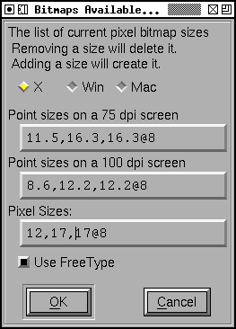FontForge
also supports anti-aliased bitmap fonts, and you can use this dialog to generate
them. If you want to generate a 12 point anti-aliased font with 8 bits per
pixel you would type 12@8 into the dialog above. FontForge supports 1, 2,
4 and 8 bit per pixel fonts (a 1 bit per pixel font is a standard bitmap,
the others are greymaps).
(New greymaps can not be created by scaling old greymaps, if you wish to
generate a greymap font, you must have an outline font).
-
Regenerate Bitmap Glyphs...
-
If you have changed the outline that a bitmap is based one then you should
(at some point) look into changing the bitmap too. This command allows you
to regenerate a subset of the glyphs in a given bitmap font. In the font
view you can regenerate all selected glyphs, while in the bitmap and outline
views you can regenerate the current glyph. You can pick what pixel sizes
should be regenerated too (unlike the above command, removing a bitmap size
from the regenerate list will not delete it).
As before, if you wish to change a greymap you should refer to it by
<pixel-size>@<bits-per-pixel>.
-
Remove Bitmap Glyphs...
-
This command will remove one or several bitmap glyphs from a strike (while
leaving the strike otherwise intact). The dialog is similar to the above
two. Any indicated glyphs will be removed from the specified strikes.
-
Styles
-
There are many standard variations on Latin (Greek,
Cyrillic) fonts. Some of them apply to other scripts -- making a font darker
(bolder) is common to many scripts, though the actual mechanics differ from
script to script) Others -- such as Italic -- are more specialized.
-
Change Weight...
-
This is a simplistic command to make the stems of glyphs darker or lighter.
It sometimes works.
For CJK glyphs it simply expands the strokes of the font outward.
For LCG (Latin, Cyrillic, Greek) glyphs it expands the stroke outward and
then moves everything below a certain point up, and everything above another
point down. This is based on heuristics and will fail if a glyph is even
the slightest bit unexpected.
For other writing systems FontForge will do something, currently it will
fall into one of the two cases above.
See the Change Weight dialog.
-
Italic
-
An italic font is different from and more complex than an oblique font.
Traditionally fonts with serifs are made italic and fonts without serifs
are made oblique. This will change some letterforms, change the serifs, condense
the font and slant things. See the Italic
dialog.
-
Oblique
-
An oblique font is different from and simpler than an italic font. Traditionally
fonts with serifs are made italic and fonts without serifs are made oblique.
This will slant the letters.
-
Condense/Extend
-
Allows you to change the width of the counters and side bearings of a glyph.
The algorithm only works on simple latin glyphs, and it has problems with
diagonal stems. See the Condense/Extend
dialog.
-
Change X-Height
-
Allows you to change the x-height of a font
-
Change Glyph...
-
Allows you to make very general changes to a glyph's shape.
-
Add Small Caps
-
This is a little different from the previous menu items as it does not change
the selected characters themselves. Instead it creates a new glyph (or reuses
an old one) with the appropriate name. So if you selected "A", "B", and "C"
it would create glyphs "a.sc", "b.sc" and "c.sc". It will create two lookups
one bound to 'c2sc' which maps capital letters to small caps, and the other
bound to 'smcp' which maps lower case letters to small caps. It will build
the appropriate small caps glyphs in the new glyph slots. This only applies
to upper and lower case letters in the latin, greek and cyrillic scripts.
See the Small Caps dialog.
-
Add Subscripts/Superscripts
-
Like the previous command this creates new glyphs based on the selected ones.
The outlines of the selected glyphs will be scaled (with stems potentially
being scaled differently from the glyph as a whole), and moved vertically.
Then a new lookup will be created mapping the original glyph to the newly
created one under control of the appropriate feature.
See the Subscript/Superscript dialog.
-
Outline
-
 Changes
the selected glyphs so that instead of being a solid block, only the outline
of the glyph is visible. The glyphs' bounding boxes will not change.
Changes
the selected glyphs so that instead of being a solid block, only the outline
of the glyph is visible. The glyphs' bounding boxes will not change.
-
Inline
-
Changes the selected glyphs so that the glyph is surrounded by an outline.
The glyphs' bounding boxes will not change.
-
Shadow
-
Changes the selected glyphs to give them each a
shadow.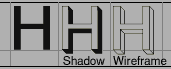
The user has control over the shadow size and angle.
-
Wireframe
-
Changes the selected glyphs to give them a 3D wireframe look.
-
Transformations
-
This sub-menu has rather different choices in the bitmap view from the other
views. (Because bitmaps are discrete and the continuous transformations of
splines are not meaningful).
-
Transform...
-
In the Font and Outline Views this brings up the
transform dialog. This provides the standard linear transformations you
expect to have available (rotation, scaling, translation, skewing).
-
Point of View Projection
-
This dialog allows you to perform a perspective
transformation on your glyphs. (This is a non-linear transformation)
-
Non-Linear Transform...
-
This dialog allows you to perform
a general transformation (which could be linear or which can be non-linear).
Essentially you provide two equations for how x and y should be mapped.
-
Flip Horizontally
-
Flips the bitmap horizontally. (Only in bitmap view)
-
Flip Vertically
-
Flips the bitmap vertically. (Only in bitmap view)
-
Rotate 90° CW
-
Rotates the bitmap 90° clockwise. (Only in bitmap view)
-
Rotate 90° CCW
-
Rotates the bitmap 90° counter-clockwise. (Only in bitmap view)
-
Rotate 180°
-
Rotates the bitmap 180° (Only in bitmap view)
-
Skew
-
Allows you to specify a ratio by which to skew the bitmap 1:3 means for every
3 pixel rise in y, skew the bitmap one pixel horizontally. (Only in bitmap
view)
-
Non Linear Transform...
-
This command is not available in the default build, you must modify the file
configure-fontforge.h and then rebuild FontForge. This command
allows the user to specify a non-linear transformation as a pair of expressions
(the first specifies the transformation for the x coordinate, the second
for the y coordinate). These expressions may be fairly general functions
of x and y. See the scripting
page for a description of the syntax.
-
Expand Stroke...
-
Not in the bitmap view. In the font view it applies to all foreground splines
in all selected glyphs. In the outline view it applies to all paths that
have at least one point selected (or if no points are selected then it applies
to all paths).
 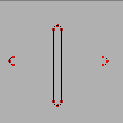
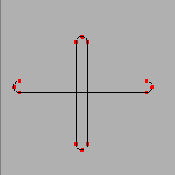
Above is a simple example of what expand stroke can do. It takes the two
open paths above left and turns them into the two closed paths right.
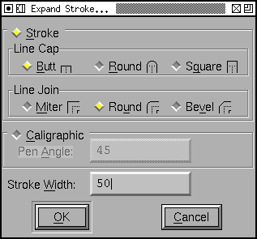
The Expand Stroke dialog gives you control over various aspects of the expansion
process. You can chose a stroke width, how the ends of an open path should
be drawn, and how the path should look when two splines (or lines) join which
do not have the same slope (ie. at a corner point). Or you may choose to
have the path be that which would be traced by a calligraphic pen, or an
elliptical pen. For closed contours you may also choose to remove either
the generated contour which is inside the original, or that which is outside
(Note: Make sure your glyph is oriented correctly with
Edit->Correct Direction before
removing a contour (if misoriented the wrong contour is removed)).
How is this done?
-
Tile Path
-
This command is not available in the default build, you must reconfigure
$
configure --with-tilepath and then rebuild FontForge. Not
available in quadratic (truetype) fonts. This command brings up a
dialog which allows you to specify a tile to
be applied to any selected contours.
-
Tile Pattern...
-
Also not available in the default build, also controled by $
configure
--with-tilepath. This command
allows you to design a pattern which will be layed down on the current layer
m*n times (where m is the number of horizontal repeats and n the number of
vertical repeats.
-
Overlap
-
None of these is available in the bitmap view.
-
Remove Overlap
-
Not in the bitmap view, not available when the font has quadratic
splines1. If two closed paths
intersect then there will be overlap. This will get rid of it, leaving one
closed path behind.
Make sure paths have the correct orientation. Consider the letter "O" with
two contours. If both contours run in the same direction then the inner path
will be removed (because the outer path overlaps it everywhere), but if the
contours run in opposite orientations then the inner path will be retained.
Things get very strange if you have intersecting paths with different
orientations.

This command is probably the buggiest in FontForge. So before FontForge invokes
the command it will save the state to the error recovery file.
Warning: Splines which are tangent (or nearly so) cause problems. Points
which are close together can cause problems.
-
Intersect
-
| 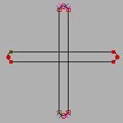 |
 |
This will remove everything not in the intersection of two regions.
-
Exclude
-
This will remove the selected contours from the unselected ones. Only available
in the outline glyph view.
-
Find Intersections
-
This finds the places where overlapping contours intersect and inserts points
at those locations.
-
Simplify
-
-
Simplify
-
Not in the bitmap view. If you have lots of points on a path, some of which
do not materially add to the path's shape, then this command will remove
the extraneous points. (It will not remove points where the slope at the
point is horizontal or vertical as postscript likes to have these points
present).
How is this done?
-
Simplify More
-
This is a variant of the simplify command. It brings up a dialog which gives
you control over what sorts of errors this simplification is allowed to induce.
You can control:
-
How far the simplified contour is allowed to stray from the original
-
Whether to allow removal of extreme points
-
Whether to allow the slope to change at points.
-
Whether to make corner points into curve points (by adjusting the control
points)
-
Whether to flatten small bumps off of lines
-
Whether to try to simplify straight lines at all
Finally, you may specify whether this set of values should become the default
value for future Simplify commands
-
Cleanup Glyph
-
This is a special case of the simplify command. In this case if there is
a spline which actually traces out a line but none the less has control points,
then this command will remove the control points. It will also cleanup zero
length splines.
-
Canonical Start Points
-
This will change the start point of the contour (or of all selected contours)
to be the leftmost point on the contour. If there are several points with
the same horizontal coordinate it will pick the one closest to the baseline.
There are two reasons for doing this:
-
In a PostScript Type1 or Type2 font it will (usually) reduce the size of
the code expressing the glyph slightly. (I don't think it can increase the
code, but there are certainly cases where the optimization will have no effect).
-
It will enable FontForge to find more reusable bits of code which it can
put in subroutines
-
Canonical Contour Order
-
Order the contours so that the contour with the leftmost point comes first,
then the contour whose leftmost point is a little further right and so forth.
Again, this should decrease the code size slightly in a Type1 font.
-
Add Extrema
-
Not in the bitmap view. Both TrueType and Type1 say that there should be
points on the contour where it reaches its extreme horizontal and vertical
values. In the outline view, if any points are selected, this will add points
at all extrema on splines between selected points. In the font view, metrics
view (or if nothing is selected in the outline view) it will add extrema
to a spline if: 1) The spline is longer than the em-size/32, or 2) the entire
contour (rather than just the current spline) attains its maximum/minimum
value at this point. If the added extrema is extremely close to an already
existing point, fontforge may remove that point to avoid creating tiny splines.
-
AutoTrace
-
This command is only available if you have downloaded Martin Weber's
autotrace program,
or Peter Selinger's potrace. If you
have a background image in a glyph then autotrace will automagically trace
the outlines of that image. See the section on
autotracing for more information.
-
Align menu
-
This submenu is only present in the outline view, it allows you to align
points or to space them out along an axis.
-
Average Points
-
This will look at all the selected points and find the coordinate with the
least change. Then it will average find the median point on that axis and
set all the selected points to have that value for the appropriate
coordinate.
So if you have a line which is almost horizontal, and select its endpoints
and apply this command it will be horizontal.
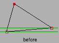
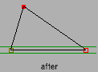
(if you select exactly two points, and they lie close to a 45 diagonal, then
they will be forced to the diagonal rather than to horizontal/vertical)
-
Space Points
-
If you have three or more points selected then FontForge will figure out
the coordinate that has the greatest change and will space the points out
regularly along that axis.
If you select one point (and that point is in the middle of a path) then
(internally) the point's location will be expressed in a coordinate system
which is rotated so that one axis is parallel to the line between the two
points that surround the selected point. The selected point will be moved
mid-way between the two on this axis, while it's other coordinate remains
fixed.
That's an extremely complicated way of saying: If the selected point is connected
to two points which are on a horizontal line, then the selected point's x
coordinate will be midway between the two, while its y coordinate remains
unchanged.
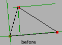
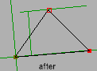
-
Space Regions
-
This is similar to the above command except that it allows you to make a
rather simple definition of a collection of points which should be moved
together. Each of these regions will be regularly spaced along the chosen
axis. A region is defined as a collection of points, each one of which is
within some maximum distance of at least one other point in the region. The
purpose of this is to allow you to space out the stems of the letter "m"
so that they regularly spaced horizontally. Sadly it won't work in many cases
because in a serifed font the serifs will often be closer to each other than
to their respective stems.
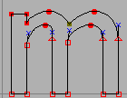
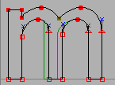
-
Make Parallel
-
If four points are selected, and there are two lines between them, then FontForge
will make those lines parallel. If there are four lines between them (ie.
they form a quadrilateral, then FontForge will turn it into a parallelogram.
(note, this only works on lines, not on curved splines)
The last point selected will be the one moved (sometimes FontForge doesn't
remember which point was selected last, then it will just pick one randomly.
If you don't want that to happen, select your points and then single click
on the one you want moved).
-
Round
-
-
Round to Int
-
Not in the bitmap view. FontForge stores point locations as real numbers
(ie. it retains fractional values). TrueType only supports integral values
(And much of the time you want integral values in Type1 and Type2 fonts also
-- using real numbers makes font files bigger), so when generating the font
points are rounded to integral values. This command will round all selected
locations to the closest integer.
-
Round to Hundredths
-
Not in bitmap or metrics views. FontForge's Type1 output is limited to hundredths
of an em-unit, even when rounding is turned off in the Generate [Options]
dialog.
-
Round to Cluster
-
Occasionally you want to make sure that coordinates which are close together
have the same value. This command will do that.
-
Order
-
This changes the order in which contours, references and images are drawn.
It is almost useless because this order of contours and references does not
affect the final appearance of the glyph. The only relevance it has is when
interpolating fonts and in multiple master fonts. Here similar contours must
appear in the same order.
If you have a glyph which contains both contours and references, FontForge
does not specify whether references or contours are drawn first (or whether
the two are intermixed). If this matters to you, unlink your references.
-
Clockwise
-
Only in the outline view. If all selected paths have a clockwise direction
then this will be checked. Selecting it will make all paths be clockwise.
If not paths are selected, or if all selected paths are open this will be
greyed out. I a selected path intersects itself results are indeterminate.
-
Counter-Clockwise
-
Only in the outline view. If all selected paths have a counter-clockwise
direction then this will be checked. Selecting it will make all paths be
counter-clockwise.
If not paths are selected, or if all selected paths are open this will be
greyed out. I a selected path intersects itself results are indeterminate.
-
Correct Direction
-
Not in the bitmap view. Sets the direction of outermost paths to be clockwise.
The next path crossed will be made counter-clockwise, the next clockwise,
etc.
This command may produce unexpected results if two splines cross.
If a glyph contains a flipped reference, this command will be unable to correct
the contours inside of the reference directly, instead it will offer to unlink
the reference after which it can treat its (former) contours like any others.
-
Insert Text Outlines...
-
Upon occasion it is useful to be able to insert text into a glyph. The
Insert Text Dialog lets you do this.
-
Build Accented/Composite Glyph
-
Not in the bitmap view.
The first menu item will only build accented letters, the second will build
general composite glyphs (fractions, ligatures, digits inside parens, roman
numerals, etc.) as well.
If the current glyph is an accented glyph (and all the base glyphs and accents
have already been created) then this command will delete anything that is
currently in the foreground and put a reference to the base glyph and another
reference to the accent glyph into the foreground. So if the current glyph
were "À" then a reference to "A" would be added to it, and a reference
to "`" would be centered above the "A".
If the current glyph is something like "agrave.sc" then it will be built
using the rules of "agrave" but with ".sc" variants. So "agrave.sc" would
contain "a.sc". For accents it will use "grave.sc" if it exists and "grave"
if it does not.
If Copy From is set to All Fonts then any
bitmaps will have a similar process done (even in the outline glyph view).
A more complete description is given in the section on
accented glyphs.
-
Build Duplicate
-
Only in the font view.
Consider the letters "Alpha" and "A". Often these may be represented by the
same glyph. This command which change the encoding slightly so that the encoding
for U+0391 will refer to the glyph named "A". Note that this is subtly different
from refering to a glyph named "Alpha" which refers to another glyph named
"A".
Adobe suggests that you use a reference rather than giving to unicode code
points to one glyph, but it is part of the font format.
-
Merge Fonts...
-
Only in the font view. If you are building a unicode font you will often
want to merge in other fonts. You can, of course, cut and paste from one
to the other, but that can be tedious, while this command will do it all
in one fell swoop.
FontForge does the following when merging CID-keyed fonts:
-
If the font in the window (the mergee) is a normal font and the other font
(the merger) is a CID keyed font, then the merger font is effectively flattened
and the result merged into the mergee.
-
If the mergee is a CID keyed font and the merger font is a normal font then
the merger font will be merged into whichever of the mergee's subfonts is
currently active.
-
If both are CID keyed fonts, then they should:
-
Have the same registry and ordering
-
The supplement number of the mergee should be at least as big as that of
the merger
-
The mergee should have at least as many subfonts as the merger.
If these conditions be met then any CIDs from the merger which are not present
in the mergee will be merged into the same subfont of the mergee as they
came from in the merger.
This strikes me as somewhat problematic, but I can't think of a better solution.
FontForge will also copy advanced typographic features, kerning, ligatures,
etc.
If one of the two glyphs of a kerning pair is in the mergee and the other
in the merger then you will be given the option of either ignoring this kerning
pair or adding it to the resultant font. This happens if both the mergee
and the merger contain a glyph, and the kerning pair is in the merger font
-- if that glyph is the same in both fonts then you would want to include
the kerning pair, but if it differs then you probably don't.
-
Interpolate Fonts...
-
Only in the font view. If you have a bold font and a light font and would
like to create a medium font, then you can interpolate a font between the
two (or you can extrapolate a font that's even bolder or lighter). Your two
fonts must have the same sets of glyphs, and each glyph must have the same
number of paths (ordered similarly) and each path must have the same number
of points on it, and must have the same references.
Examples: If you are interpolating from a light font to a bold one, then
a medium font might be 50% between the two, an extra-bold font might be 200%
and a thin one -100%.
-
Compare Fonts...
-
 Sometimes
it is useful to compare two versions of a font and see what has changed.
This command will allow you to check:
Sometimes
it is useful to compare two versions of a font and see what has changed.
This command will allow you to check:
-
The addition or removal of glyphs
-
Changes to outline glyphs
-
Changes to bitmap glyphs
-
Changes to the font's names (truetype 'name' table and some postscript names)
-
Changes to the font's glyph substitutions (ligatures and whatnot)
-
Changes to the font's glyph positioning (kerning and whatnot)
You can also use it to compare truetype and postscript versions of the same
font. Normally fontforge checks to make sure all the splines match exactly,
but you can also have it test whether a contour in one font is always close
to the similar contour in another font, or whether a contour in one font
is inside a reference in another (these are common when comparing PostScript
fonts where the format loses references).
Comparing PostScript hintmasks is another somewhat iffy topic. There are
often many equivalent (I think) hint mask possibilities, but I don't have
a good algorithm for saying that they are equivalent -- especially since
Adobe uses hints in ways which I find unexpected.
Finally you can have it place the outlines of each differing glyph from the
second font into the background of the corresponding glyph in the first font.
This can be helpful in correcting discrepancies.

-
Compare Layer To Layer...
-
Only available in the Outline and Font Views. This command allows you to
specify two layers within the current font and then checks that they are
similar. In the outline view a message box pops up to say if the layers are
the same or different. In the Font View, the view will scroll to the first
glyph whch differs, all differing glyphs will be selected and a message box
pops up.